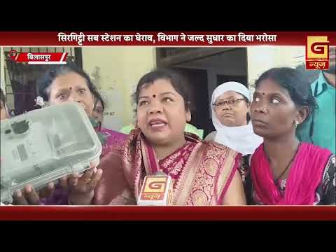
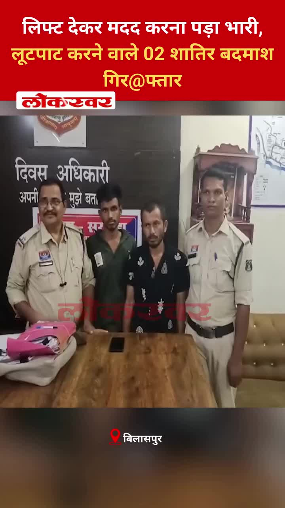
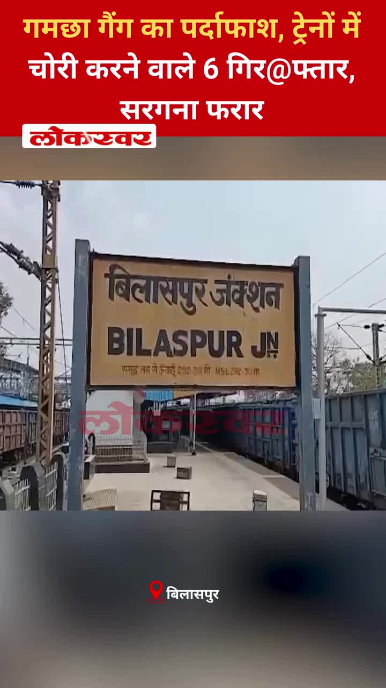
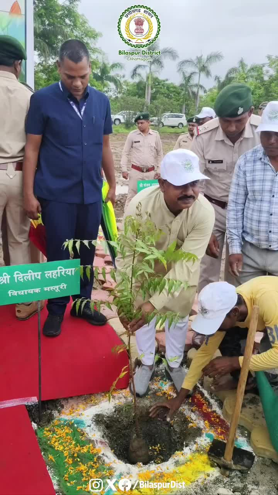
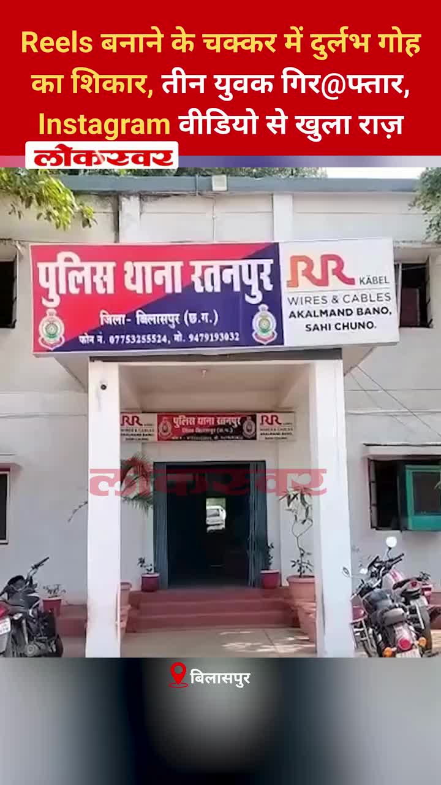
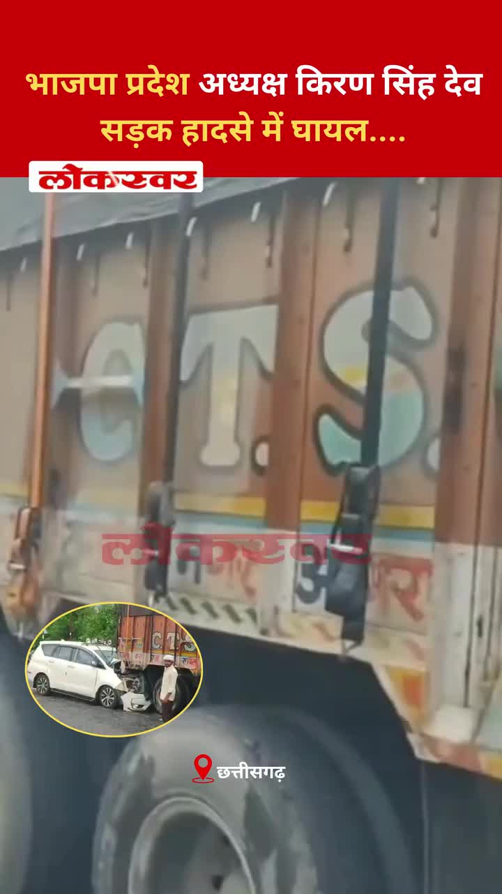
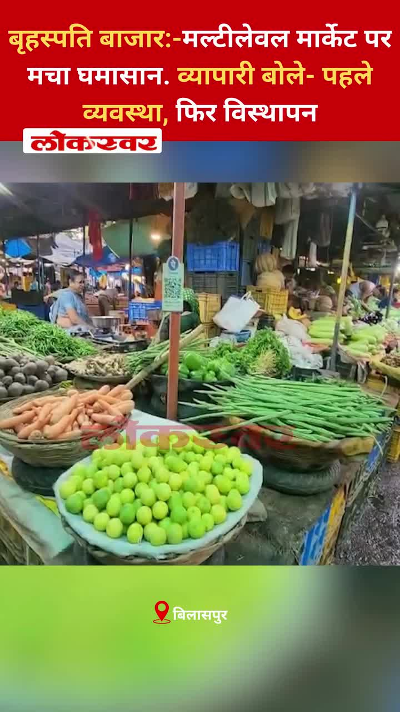
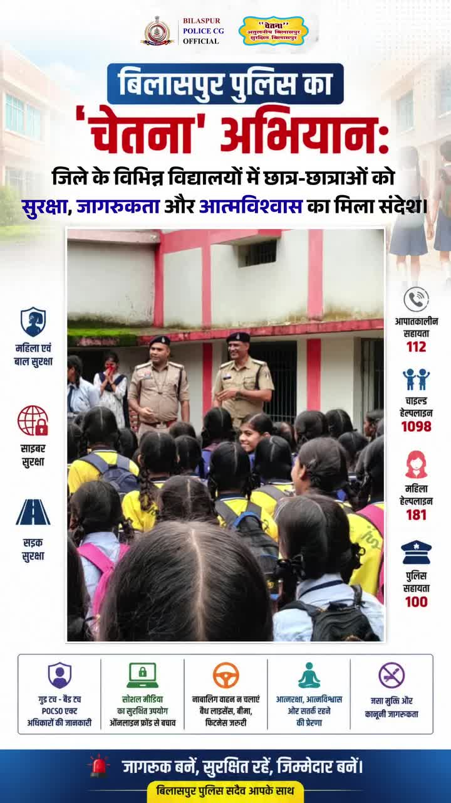
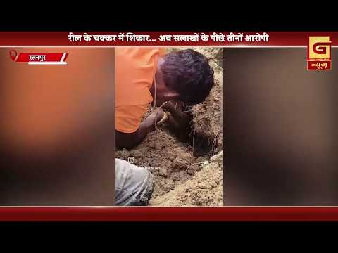

Bilaspur News Hub
1
BUSINESS
1
EDUCATION
3
EVENT
13
GOVERNMENT
3
HEALTH
4
INFRASTRUCTURE
20
INSTAGRAM NEWS
9
NEWS
1
OTHER
14
POLICE
2
RAILWAY
3
SOCIAL
14
YOUTUBE VIDEOS
BUSINESS1

Nai Dunia Bilaspur · Published: Wed, 29 Ju | Scraped: 2026-07-29 12:00:04
Only three days remain for farmers to enroll in the crop insurance scheme and avail its benefits. Authorities stress registration must be completed by July 31 to avoid missing out.
EDUCATION1

The Hitavada · Scraped: 2026-07-29 08:22:00
Heavy rains flooded a city school, prompting rescue operations using an excavator to save trapped students. No injuries were reported, but the incident highlighted the need for better disaster preparedness in schools.
EVENT3

The Hitavada · Scraped: 2026-07-29 12:00:04
The event highlights collaborative cinema projects that transcend political borders, featuring filmmakers from multiple nations. It aims to promote cultural exchange through shared storytelling.
BREAKINGSharmila wins historic gold in para athletics / शर्मा ने पैरा एथलेटिक्स में ऐतिहासिक स्वर्ण जीता
The Hitavada · Scraped: 2026-07-29 08:22:00
Sharmila secured a historic gold medal in para athletics, marking India's triumph on the global stage. Her victory inspires athletes with disabilities and highlights the growing prominence of para sports.
G News Bilaspur · Published: 2026-07-29 | Scraped: 2026-07-29 16:01:12
Large gathering of devotees participated in Guru Purnima rituals at Mahatma Ram Bhikhu Maharaj Chowk, marking the occasion with prayers and celebrations.
GOVERNMENT13

Lokswar · Published: Wed, 29 Ju | Scraped: 2026-07-29 12:00:04
The Lok Sabha approved the Public Examinations (Prevention of Unfair Means) Amendment Bill 2026 by voice vote, aiming to curb cheating in competitive exams. The session was later adjourned after opposition protests.

BREAKINGJail gasifier death raises security concerns / बिलासपुर जेल में गैसीफायर में मौत, सुरक्षा पर सवाल
CG Wall · Published: Wed, 29 Ju | Scraped: 2026-07-29 13:38:02
A prisoner died in the gasifier furnace at Bilaspur Central Jail, prompting scrutiny of jail safety protocols. The incident follows a double murder case conviction and has sparked questions about security arrangements.

Lokswar · Published: Wed, 29 Ju | Scraped: 2026-07-29 13:38:02
Chhattisgarh BJP president Kiran Dev Singh was injured in a road accident while traveling in Uttar Pradesh. The details of the crash are being awaited, and his condition is not yet disclosed.

CG Wall · Published: Wed, 29 Ju | Scraped: 2026-07-29 17:15:47
The car of Chhattisgarh BJP President Kiran Singhdev collided with a truck near Raipur, leaving him injured. The incident occurred on Wednesday and has sparked concern over road safety. Authorities have initiated an investigation.

CG Wall · Published: Wed, 29 Ju | Scraped: 2026-07-29 17:15:47
The collector has set a firm deadline for providing tap water to all households in the district, urging officials to accelerate the Jal Jeevan Mission in rural areas. Strict warnings have been issued to ensure speedy implementation. The move aims to improve water access for villagers.

CG Wall · Published: Tue, 28 Ju | Scraped: 2026-07-28 17:28:36
An ACB operation caught a government clerk accepting a bribe to secure snake bite compensation, exposing corruption in relief distribution. The incident underscores the need for transparency in compensation processes.

The Hitavada · Scraped: 2026-07-29 12:00:04
Giribala and Samarth will remain in judicial custody until August 11. The extension follows a court decision.

The Hitavada · Scraped: 2026-07-29 08:22:00
NCPI MPs participated in the NDA's inaugural parliamentary party meeting, marking a significant political engagement. The meeting focused on coordination and strategy ahead of upcoming sessions.
The Hitavada · Scraped: 2026-07-29 08:22:00
The Supreme Court prohibited coercive measures against protesters who have no criminal record, safeguarding the right to protest. This ruling ensures that peaceful demonstrations are not unfairly suppressed.
The Hitavada · Scraped: 2026-07-29 08:22:00
The Chief Minister has directed the Home Department to withdraw FIRs filed against protesters during the NEET paper leak agitation, aiming to ease tensions and address concerns over the crackdown on students.
The Hitavada · Scraped: 2026-07-29 08:22:00
The Lok Sabha has started debating the anti-paper leak bill aimed at curbing examination malpractices, seeking stricter penalties for those involved in leaking exam papers.
The Hitavada · Scraped: 2026-07-29 08:22:00
The state government will hold weekly public meetings every Friday for citizens to voice grievances directly. This aims to boost responsiveness and trust between officials and the public.
The Hitavada · Scraped: 2026-07-29 08:22:00
Defence Minister Rajnath Singh said the proposal to create a dedicated Bastar Regiment is being examined. The move aims to enhance regional representation and operational efficiency in the region.
HEALTH3

Lokswar · Published: Wed, 29 Ju | Scraped: 2026-07-29 12:00:04
A multimillion‑rupee modular hospital in Bilaspur lies abandoned as scrap, highlighting major health‑infrastructure failures during COVID. Authorities are under scrutiny for the massive waste of public funds.
The Hitavada · Scraped: 2026-07-29 12:00:04
A fire broke out in the emergency ward of BRAMH, prompting evacuation and emergency response. No casualties were reported, but the cause is under investigation.

The Hitavada · Scraped: 2026-07-29 08:22:00
The department conducted inspections at local dairies to ensure compliance with safety standards and collected samples for testing. The move aims to safeguard consumers from adulterated dairy products.
INFRASTRUCTURE4

CG Wall · Published: Wed, 29 Ju | Scraped: 2026-07-29 17:15:47
Water inundated the office premises, overwhelming files and highlighting the poor condition of the old composite building. The incident raises concerns about structural safety and maintenance. Authorities have been urged to repair or replace the building.

The Hitavada · Scraped: 2026-07-29 12:00:04
Heavy rains flooded the city, submerging vehicles and causing widespread misery. Residents struggled to navigate waterlogged streets, while authorities warned of further downpours.
The Hitavada · Scraped: 2026-07-29 08:22:00
A massive crater has appeared on a newly constructed bridge in Dehradun, causing Rs 16 crore worth damage within 16 days, prompting Congress to highlight the structural failure and demand accountability.

G News Bilaspur · Published: 2026-07-29 | Scraped: 2026-07-29 16:01:12
Residents gathered at Sirgitti sub station to protest frequent power outages and inflated electricity bills caused by smart meters, demanding relief.
INSTAGRAM NEWS20


The tiger is more than a symbol of strength—it's a guardian of our forests. Protect them today for a better tomorrow. 🌳🐅
#InternationalTigerDay #TigerDay #SaveTigers #WildlifeProtection #ForestConservation taken in Marwahi by @bilaspurdiaries


Raipur police have taken action against individuals risking lives through dangerous stunts and posting obscene content for social media popularity. The crackdown aims to curb reckless behavior and protect public safety.


A lawyer in Bilaspur lost ₹47.60 lakhs after being duped by a fraudulent online trading scheme. The scam highlights rising cyber fraud risks and the need for caution in digital investments.


A massive fire broke out at Octopussy Bar in Raipur, quickly spreading to adjacent shops. Fire services responded, but the blaze caused significant damage and raised concerns over safety standards.


The Khutaghat Dam in Bilaspur offers a scenic view, attracting locals and tourists. The post highlights the region's water resources and natural beauty.


A traditional Guru mantra honoring the divine teacher as embodiment of Brahma, Vishnu, and Mahesh. It reflects deep respect for spiritual guidance in Indian culture.


यातायात पुलिस बिलासपुर द्वारा स्कूली वाहनों की सुरक्षा पर सख्त निगरानी, दस्तावेज़ अधूरे तो कार्रवाई तय..🚦🚨
जी.डी. पब्लिक स्कूल, रहंगी में स्कूली वाहनों का निरीक्षण कर दस्तावेज़ों की जांच की गई। जिन वाहनों में दस्तावेज़ों की कमी पाई गई, उनके विरुद्ध ऑनलाइन चालान की कार्रवाई की गई तथा वाहन चालकों को यातायात नियमों के पालन हेतु समझाइश दी गई। by @bilaspurdist

Two robbers offered a lift to a stranger then attempted to rob him, but were quickly apprehended by local police. The victim escaped unharmed while the thieves face charges.
A fraud case involving re-labelling of expired pesticides sold to farmers led to a warehouse being sealed. Police have launched an investigation to prevent further misuse of substandard chemicals. The incident highlights the need for stricter regulation of agrochemical supplies.
Deputy Chief Minister Arun Saw highlighted how wrestler Gyaneshwari Yadav's victory could inspire a new wave of sporting ambition. He emphasized the broader impact on youth and the sports community. The remark reflects the government's focus on promoting athletics.
Police intervened at Khuntaghat weir to stop dangerous stunt biking, physically disciplining offenders with ear-pulling. The action aims to deter risky behavior on public infrastructure. Authorities warned of stricter penalties for future violations.

Police uncovered the Ghamcha gang responsible for stealing from trains, arresting six members. The main conspirator remains at large, prompting a manhunt. The operation highlights railway security concerns and the need for vigilance.

Deputy CM Arun Saw emphasized that trees beautify the planet and forests represent the greatest future asset. He called for increased conservation efforts and community participation in planting. The statement underscores the government's commitment to environmental sustainability.

Three young men were arrested for illegally hunting a rare catfish species to create Instagram reels, highlighting wildlife protection concerns. The incident was uncovered through a video posted on social media.

Chhattisgarh BJP president Kiron Singh Dev was hurt when his vehicle met with an accident, prompting concern among party workers.
Two women from Gujarat were arrested in Raipur for allegedly collecting donations under the pretense of helping orphan children. The police are investigating the fraudulent fundraising scheme and its impact on vulnerable families.

A multi-level marketing market in Bilaspur has turned chaotic as traders protest against sudden displacement. They are calling for proper arrangements and orderly procedures before any relocation takes place.

The Bilaspur Police organized the 'Chetna' campaign across district schools to promote road safety and social awareness. The program includes interactive sessions and educational materials for students.
A post from the Instagram account @decode_bilaspur, shared by the same user, likely featuring local updates or content. It serves as a social media update for the Bilaspur community.
NEWS9

Lokswar · Published: Wed, 29 Ju | Scraped: 2026-07-29 05:03:19
<p>(अजय श्रीवास्तव) : राजधानी रायपुर के तेलीबांधा इलाके में स्थित ऑक्टोपस बार में बुधवार सुबह भीषण आग लगने से इलाके में हड़कंप मच गया। देखते ही देखते आग ने विकराल रूप धारण कर लिया और इसकी लपटें बार के आसपास स्थित दुकानों तक पहुंच गईं, जिससे मौके पर अफरा-तफरी का माहौल बन गया। आग की …</p>
<p>The

Lokswar · Published: Wed, 29 Ju | Scraped: 2026-07-29 05:03:19
<p>(प्रदीप भोई) : कवर्धा। सावन माह की शुरुआत से पहले छत्तीसगढ़ के मुख्यमंत्री विष्णुदेव साय ने कबीरधाम जिले के विश्व प्रसिद्ध भोरमदेव मंदिर में परिवार सहित भगवान भोलेनाथ के दर्शन कर जलाभिषेक किया। पूजा-अर्चना के बाद मुख्यमंत्री ने श्रद्धालुओं के लिए बड़ा ऐलान करते हुए कहा कि सावन के दौरान कांवड़ यात
Lokswar · Published: Wed, 29 Ju | Scraped: 2026-07-29 05:03:19
<p>(भूपेंद्र सिंह राठौर) : छत्तीसगढ़ में मानसून पूरी तरह सक्रिय है और अगले 48 घंटे बेहद अहम माने जा रहे हैं। बंगाल की खाड़ी से बने गहरे अवदाब का असर अब पूरे प्रदेश पर दिखाई दे रहा है। मौसम विभाग ने कई जिलों के लिए ऑरेंज और येलो अलर्ट जारी किया है। विभाग ने चेतावनी …</p>
<p>The post <a href="ht
The Hitavada · Scraped: 2026-07-29 12:00:04
A deep depression is expected to intensify rainfall across the state, raising flood risks. Authorities have issued alerts and urged residents to stay cautious.

The Hitavada · Scraped: 2026-07-29 08:22:00
Suniel Anand, son of legendary actor Dev Anand, has passed away, marking a loss to the film industry. He was known for his contributions to cinema and his family's legacy.
The Hitavada · Scraped: 2026-07-29 08:22:00
Nagpur recorded 180 mm of rainfall, prompting orange alerts for several districts, while Chandrapur, Gadchiroli, and Gondia face red alerts today. Authorities have warned residents of potential flooding and advised caution.
The Hitavada · Scraped: 2026-07-29 08:22:00
Heavy monsoon rains hit the city, bringing relief from heat but causing disruption in daily life. Residents are adjusting to flooding and travel delays.
G News Bilaspur · Published: 2026-07-29 | Scraped: 2026-07-29 17:15:47
G News Bilaspur EVN 01 on 29 July 2026 offers early evening updates covering politics, crime, and community news. Audiences get quick access to the day's key information.

G News Bilaspur · Published: 2026-07-28 | Scraped: 2026-07-28 17:28:36
G News Bilaspur aired a special broadcast on 28 July 2026 at 01:00 EVN, covering regional updates. The program highlighted local events and developments. Viewers can expect regular updates from the channel.
OTHER1
G News Bilaspur · Published: 2026-07-29 | Scraped: 2026-07-29 16:01:12
This entry appears to be a placeholder for a news segment scheduled for 29 July, likely covering various local updates.
POLICE14

Lokswar · Published: Wed, 29 Ju | Scraped: 2026-07-29 08:22:00
Police at Bilaspur’s Khootaghat weir arrested stunt performers who endangered lives filming reels, holding them by their ears as a warning.
Lokswar · Published: Wed, 29 Ju | Scraped: 2026-07-29 08:22:00
A paper gang in Bilaspur division switched to stealing from trains by hiding theft in ghunghats; six members were arrested while the mastermind remains at large.

Lokswar · Published: Wed, 29 Ju | Scraped: 2026-07-29 12:00:04
Ranchi police busted an interstate gang that cheated victims by faking gold discoveries during excavations. The fraudsters collected lakhs of rupees before three members were arrested.
Lokswar · Published: Wed, 29 Ju | Scraped: 2026-07-29 12:00:04
Three youths were arrested for hunting a protected catfish to film Instagram reels. Their reckless social‑media stunt endangered wildlife, and police recovered the fish.

Lokswar · Published: Wed, 29 Ju | Scraped: 2026-07-29 13:38:02
A joint rescue team from Chhattisgarh and Punjab recovered the bodies of a couple and their car from the Latan river near Madhopali bridge after a four‑day search. The tragic accident had occurred three days earlier, claiming the lives of the victims.

CG Wall · Published: Wed, 29 Ju | Scraped: 2026-07-29 17:15:47
The Bilaspur Police organized a multi-purpose ‘Chetna’ program to empower female students with safety knowledge and self-defense techniques. The initiative aims to replace fear with awareness and equip young women to protect themselves. Community response has been positive.
Lokswar · Published: Wed, 29 Ju | Scraped: 2026-07-29 17:15:47
A inmate of Bilaspur Central Jail died after leaping into a burning gasifier furnace on Wednesday, causing a shocking incident. The cause of the jump is under investigation, and a probe has been ordered. Jail safety protocols are being reviewed.

CG Wall · Published: Tue, 28 Ju | Scraped: 2026-07-28 17:28:36
Two criminals lured a young man with a false lift offer, then attacked him with stones in a secluded area and stole his bike. Sarkanda police have arrested the culprits, highlighting the need for vigilance against such crimes.

CG Wall · Published: Tue, 28 Ju | Scraped: 2026-07-28 17:28:36
A man with a twisted mindset was arrested after 20 days for assaulting a young girl, showing that daughters are unsafe even behind their homes. The case highlights growing perversion in society and the need for swift justice.
The Hitavada · Scraped: 2026-07-29 12:00:04
Police arrested three suspects after seizing 223 kg of cannabis valued at Rs 1.11 crore. The major drug bust highlights ongoing efforts to curb narcotics trafficking in the region.
The Hitavada · Scraped: 2026-07-29 12:00:04
Ratibad cops seized ten SUVs following an illegal mud rally at Kaliyasot wetland. Action follows media reports on off‑road stunts, though organizers have not yet faced legal action.
BREAKING16 Maoists surrender to Jharkhand Police / झारखंड पुलिस के सामने 16 माओवादियों ने आत्मसमर्पण किया
The Hitavada · Scraped: 2026-07-29 08:22:00
Sixteen Maoists surrendered before Jharkhand Police, reflecting ongoing efforts to reduce Naxal insurgency in the region. The development is seen as a significant law‑and‑order victory.
The Hitavada · Scraped: 2026-07-29 08:22:00
Police in Gorakhpur have seized 71 bottles of illegal English liquor during a crackdown. The operation aims to curb illicit liquor trade and protect public health.

G News Bilaspur · Published: 2026-07-29 | Scraped: 2026-07-29 16:01:12
A man was injured after hunting a rare catfish to use its skin for a fishing reel, highlighting wildlife protection concerns.
RAILWAY2

Nai Dunia Bilaspur · Published: Wed, 29 Ju | Scraped: 2026-07-29 08:22:00
The Bilaspur railway station will soon provide high‑tech services including electric vehicle charging and car washing facilities in its parking area, improving commuter convenience.

The Hitavada · Scraped: 2026-07-29 12:00:04
Chief Minister inaugurated additional stoppage points for the Malwa and Somnath Expresses at Nishatpura, enhancing connectivity. This development marks Bhopal’s fifth passenger railway station, improving regional travel.
SOCIAL3
BREAKINGDurg youth falls into Damadhandhara waterfall, rescue ongoing / दामाधारा झरने में गिरा दुर्ग का युवक, दूसरे दिन रेस्क्यू जारी
Lokswar · Published: Wed, 29 Ju | Scraped: 2026-07-29 08:22:00
A 20‑year‑old from Durg was swept away by the Damadhandhara waterfall while sightseeing with friends; rescue teams are still searching on the second day.
Superhero connection links local hero to iconic character / सुपरहीरो कनेक्शन ने स्थानीय नायक को प्रतिष्ठित पात्र से जोड़ा
The Hitavada · Scraped: 2026-07-29 12:00:04
A recent initiative has drawn parallels between a local community leader and a famous superhero, sparking interest among fans. The link highlights shared values of courage and service.
BREAKINGElectrician’s daughter Gyaneshwari wins India’s Silver / इलेक्ट्रीशियन की बेटी गयानश्वरी बनी भारत की सिल्वर गर्ल
The Hitavada · Scraped: 2026-07-29 08:22:00
Gyaneshwari, daughter of an electrician, earned India’s silver medal in a major competition, inspiring many with her determination and talent.
YOUTUBE VIDEOS14


Police uncovered a gang using towels to steal from train passengers in Bilaspur. The members were arrested during routine checks, and the crackdown aims to improve commuter safety.


A man accused of molesting a minor girl in Bilaspur has been arrested by police. The case sparked public outrage and prompted swift action. Authorities stressed protecting children and vowed to pursue justice.


The final news bulletin for Bilaspur on the morning of 29 July 2026 provides latest updates. It covers key developments across the city. Residents are advised to stay tuned for further details.


The Ram Bhikhu Dharmarth Seva Samiti organized a grand Guru Puja Mahotsav on Guru Purnima in Bilaspur. The event featured rituals, cultural programs, and community service initiatives. Many locals joined the festive celebrations.


Two men pretending to need a lift in Bilaspur robbed the driver after gaining his trust. The incident highlighted the dangers of hitchhiking and led to arrests. Police advise caution when offering rides.
Ram Bhikhu Samiti organized Guru Purnima celebrations in Bilaspur, featuring cultural programs and community service. The event highlighted devotion and social initiatives among participants.
A young woman from Chhattisgarh has achieved a notable success, inspiring others in the region. Her accomplishment reflects growing opportunities for girls in the state.
The NEET law triggered heated debates and disruptions in Parliament, with lawmakers from various parties clashing over its implications. The uproar continues as discussions unfold.
The Bombay High Court granted permission for Sanjay Dutt to hold a birthday event, lifting earlier restrictions. The decision followed legal appeals and public interest considerations.
A life‑imprisoned convict died after leaping into a burning furnace at a gasifier plant. Police have launched an investigation into the circumstances surrounding the fatal incident.


The evening final news from Bilaspur on 29 July 2026 brings latest updates, key events, and government announcements. Viewers stay informed with this concise broadcast.


The article emphasizes that mental strength is the foundation of effective disaster management, enabling communities to cope and recover. It highlights initiatives and awareness campaigns in Bilaspur to build resilience.


Bilaspur will now have traffic signals functioning for 18 hours a day to improve traffic flow and reduce congestion. The move aims to enhance road efficiency and commuter safety across the city.


Bilaspur prepares to accelerate development works / बिलासपुर में विकास कार्यों को गति देने की तैयारी
The administration in Bilaspur is gearing up to speed up ongoing development projects, focusing on infrastructure and public services. This initiative aims to boost economic growth and improve civic amenities for residents. Officials have announced a roadmap to ensure timely completion of key schemes.